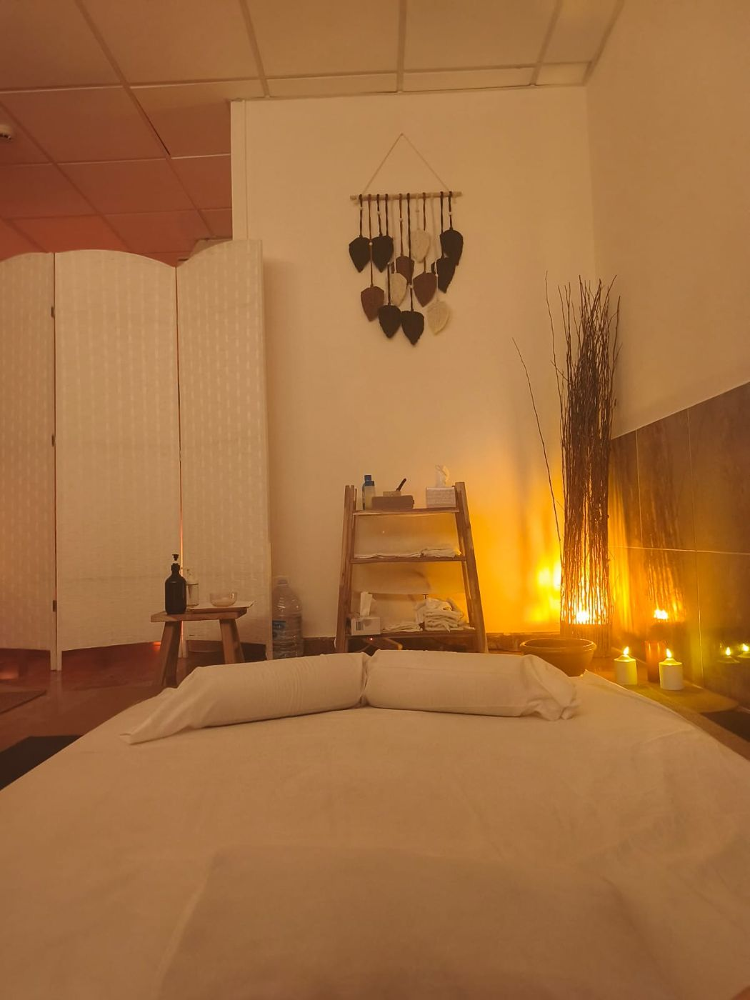
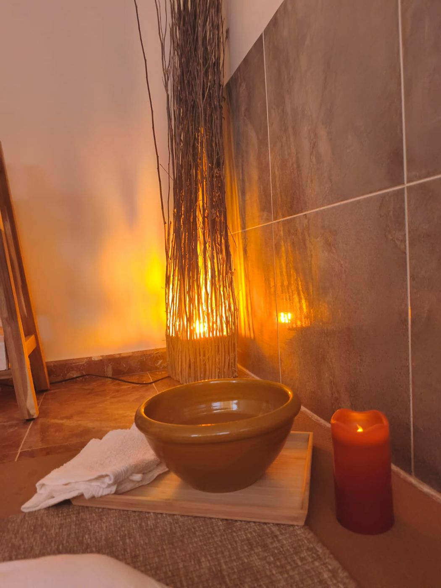

Propósito
Un espacio donde el sistema nervioso recibe por fin permiso para soltar lo que ha ido acumulando.
Sobre mí
El Arte del Tacto: masaje tántrico en Málaga desde la escucha real. Porque el masaje empieza antes del tacto.

Quién soy
Llegué desde la experiencia: años de deporte profesional, una etapa de cambio vital y el proceso de reconectar con mi propio cuerpo.
Pasé por una etapa en la que yo también necesitaba parar y no sabía cómo. Por eso entiendo lo que trae la mayoría de las personas cuando llegan.
El deporte sigue siendo parte de mi vida. Me ha enseñado cómo se mueve el cuerpo, cómo responde, cuándo necesita presión y cuándo necesita calma.
«No soy una flor de jardín para ser decorativa; soy la raíz salvaje que rompe el asfalto.»
Dámaris
Mi trayectoria
Aprendí a escuchar el cuerpo desde dentro. El cuerpo de la terapeuta también es parte del método.
Reconectar con mi propio cuerpo. De ahí nace mi forma de trabajar: primero escuchar, después tocar.
No para acumular títulos: el cuerpo tiene más capas de las que cubre cualquier curso. Mis referentes son Mario Alonso Puig y Pablo d'Ors.
Mi espacio en Málaga y, cada dos meses, agenda en Barcelona y Madrid.
Lo que me mueve
Un espacio donde el sistema nervioso recibe por fin permiso para soltar lo que ha ido acumulando.
Ser el lugar al que vuelves con regularidad, para cuidar el cuerpo antes de que tenga que hablar más fuerte.
Antes de tocar, escuchar. Que sepas exactamente a qué vienes y qué no va a ocurrir, en un espacio seguro y con límites claros.
«Cuando el cuerpo tiene un espacio seguro, la mente descansa sola.»
El espacio
No es un spa. Es un espacio donde el cuerpo puede bajar el ritmo sin tener que justificarlo.


En mis palabras
Hay una diferencia entre estar cansado y llevar meses sin escucharte. Tu cuerpo lo sabe y te lo dice en los hombros que nunca bajan.
El cuerpo dice lo que la mente calla. Una presión, un nudo, esa sensación de no soltar del todo.
Con el pecho abierto recibo lo que llega, suelto lo que pesa y abrazo la incertidumbre del camino.
Reservar
Si sientes la necesidad de reconectar contigo desde un lugar de amor y presencia, escríbeme.
Siempre con cita previa · Málaga